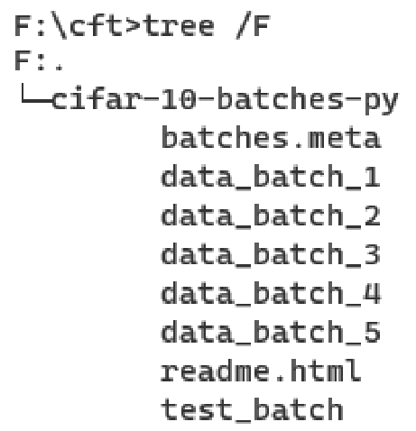

实验一 —— 实现前K最近邻居算法
在图像分类器的教学中，我们学习到了要实现KNN算法需要了解的一些知识，接下来将通过实验来进一步地阐释整个算法的实现过程。
步骤一、初始化
# ipython notebook的一些初始化操作
# 导入一些前置库，包括numpy, random(抽取数据用)
import random
import numpy as np
from cs231n.data_utils import load_CIFAR10
import matplotlib.pyplot as plt
# matplot的初始化：内嵌画图、窗口设置、插值类型、图线颜色
%matplotlib inline
plt.rcParams['figure.figsize'] = (10.0, 8.0)
plt.rcParams['image.interpolation'] = 'nearest'
plt.rcParams['image.cmap'] = 'gray'
# Ipython中，对调用的模块进行实时的更新，无需手动重载。
# http://stackoverflow.com/questions/1907993/autoreload-of-modules-in-ipython
%load_ext autoreload
%autoreload 2
在这段代码中，除了经典的numpy和需要的random模块外我们还可以看到整个程序调用了matplotlib的pyplot模块，这是用于产生数据图的一个模块，具体如何使用可以看后续代码，这里进行了初始化设置，先把图像内嵌从而不弹出新的窗口，然后设置窗口大小、插值类型以及图线的颜色。
此外我们还可以看到程序调用了一个load_CIFAR10的函数。下面我们来解释它的作用。
CIFAR-10 数据集
CIFAR-10数据集是非常经典，也是非常基础的一套训练集，它由五万个32px * 32px大小的图像组成，每个像素包含RGB三个颜色通道，因为像素少，所以整体的训练集大小不是很大，适合轻量级的模型训练。它的文件结构如下：

观察目录结构，可以发现它由五个训练集构成，需要注意的是它并不是以图像的形式存储，而是直接以二进制格式存储。如果使用二进制文本查看器来分析，可以大致看出整体的数据集的文件结构，首先是整个文件的文件头，然后存储了图像的类型（\(1 \text{ Byte}\)数字表示，\04B隔开），接下来是图像头，最终是图像的内容，大致了解了它的结构，我们可以更好理解下面程序是如何导入数据的。
导入 CIFAR-10 数据
接下来，我们来看看函数load_CIFAR10是如何运作的。
from builtins import range
from six.moves import cPickle as pickle
import os
import numpy as np
# 读取文件信息
def load_pickle(f):
version = platform.python_version_tuple()
if version[0] == "2":
return pickle.load(f)
elif version[0] == "3":
return pickle.load(f, encoding="latin1")
# CIFAR对于python有标准的返回格式。
# 返回一个字典，每个字典中是设置好的名字和相关数据
raise ValueError("invalid python version: {}".format(version))
# 读取一个数据块
def load_CIFAR_batch(filename):
with open(filename, "rb") as f:
datadict = load_pickle(f)
# 读取图像信息和标签信息
X = datadict["data"]
Y = datadict["labels"]
X = X.reshape(10000, 3, 32, 32).transpose(0, 2, 3, 1).astype("float")
# X的RGB原来在1号维，现在把XY位置维度前移，方便之后的计算。
Y = np.array(Y)
# Y的类型从List转成array，方便后续计算
return X, Y
# 读取所有数据
def load_CIFAR10(ROOT):
xs = []
ys = []
# 从1到5进行遍历，对应data_batch_i(i = 1,2,3,4,5)
for b in range(1, 6):
f = os.path.join(ROOT, "data_batch_%d" % (b,))
# 读取一个数据块的图像
X, Y = load_CIFAR_batch(f)
# 把图像放到列表中
xs.append(X)
ys.append(Y)
# 整合数据块
Xtr = np.concatenate(xs)
Ytr = np.concatenate(ys)
# 释放空间
del X, Y
Xte, Yte = load_CIFAR_batch(os.path.join(ROOT, "test_batch"))
return Xtr, Ytr, Xte, Yte
| 键（Key） | 描述 | 样例 |
|---|---|---|
| batch_label | 这批数据的标签 一个字符串表示 |
'training batch 3 of 5', 'testing batch 1 of 1'... |
| labels | 各个图像属于的类型 一个List表示，每批10000个 |
[0，1，2，3，4，5，6，7，8，9，0，1，..] |
| data | 各个图像的具体内容 一个numpy.darray表示10000张 三个通道\(32\times32\)像素的图片 组织方式：二维数组； 图片下标，(通道下标，行，列) |
略 |
| filenames | 图片名 一个字符串List表示，每批10000个 |
['auto_s_000241.png', 'bufo_viridis_s_001109.png', 'rana_catesbeiana_s_000111.png', .. ] |
我们只关心labels 和 data中的数据，所以提取出数据后，我们做了一步对X维度的重新设计——首先把二维拓展成四维（图像下标、通道下标、行、列），然后将图像进行了维度的转置，把通道下标放到最后一个维度，方便我们进行对单个像素的修改。最后把类型转换为float。
最终我们调用load_CIFAR10函数，得到了原始的数据集，其中有训练集和测试集，数据包含类型为numpy.darray的内容四维数组和类型为numpy.darray的一维下标数组。
cifar10_dir = 'cs231n/datasets/cifar-10-batches-py'
# 如果已经有存在的变量，进行释放避免出现内存冲突
try:
del X_train, y_train
del X_test, y_test
print('Clear previously loaded data.')
except:
pass
# 读入数据
X_train, y_train, X_test, y_test = load_CIFAR10(cifar10_dir)
# 观察数组的构成，来检测我们是否得到了正确的数据。这是一个经典简单且有效的检查方式。
print('Training data shape: ', X_train.shape)
print('Training labels shape: ', y_train.shape)
print('Test data shape: ', X_test.shape)
print('Test labels shape: ', y_test.shape)
我们观察上面的四个print，它们是从观察整个数组构成来看图像读入是否正确，我们同样可以用更直观的方式来判断读入是否正确。
查看读入的图片
# Visualize some examples from the dataset.
# We show a few examples of training images from each class.
classes = ['plane', 'car', 'bird', 'cat', 'deer', 'dog', 'frog', 'horse', 'ship', 'truck']
num_classes = len(classes)
samples_per_class = 7
for y, cls in enumerate(classes):
idxs = np.flatnonzero(y_train == y)
idxs = np.random.choice(idxs, samples_per_class, replace=False)
for i, idx in enumerate(idxs):
plt_idx = i * num_classes + y + 1
plt.subplot(samples_per_class, num_classes, plt_idx)
plt.imshow(X_train[idx].astype('uint8'))
plt.axis('off')
if i == 0:
plt.title(cls)
plt.show()